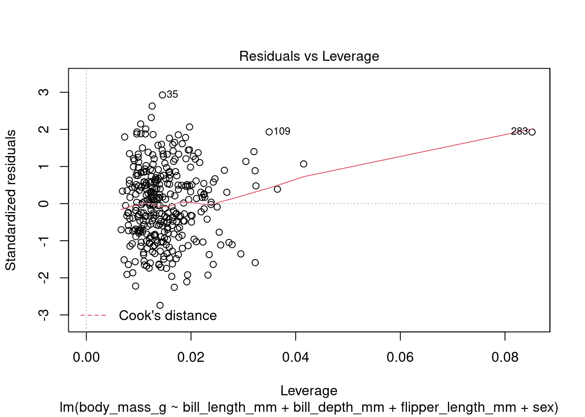

Linear regression for inferential and predictive modeling
Linear Regression
Inferential Modeling
Predictive Modeling
R
A tutorial on building and interpreting linear regression models for inferential and predictive modeling with examples in R.
Rohit Farmer ![]()
Update history
2023-07-13 First draft
Introduction
Linear regression is a statistical method used to model the linear relationship between a dependent variable (target) and one or more independent variables (predictors/features). It is one of the most widely used techniques to understand the underlying relationship between different variables and to make predictions based on this relationship.
Note
If you are primarily interested in code examples, please follow the navigation on the right; alternatively, you can test live code on Kaggle.
In linear regression, the goal is to find the line of best fit that minimizes the distance between the data points and the line. The line is represented by Equation 1 \[Y = mX + b \tag{1}\]\(Y\) is the dependent variable, \(X\) is the independent variable, \(m\) is the slope of the line, and \(b\) is the intercept. The slope represents the change in \(Y\) for a given change in \(X\), and the intercept is the point at which the line crosses the \(Y-axis\).
Equation 1 models the relationship between a single predictor and a target. However, the same equation can be extended to accommodate multiple predictors in a multiple linear regression (Equation 2).
\[Y = m1X1 + mnXn + b \tag{2}\]
To understand the mathematical reasoning behind linear regression, consider this simple example:
Suppose we have a dataset containing the weight and heights of a group of individuals. We can plot the data on a scatter plot and observe the relationship between weight and height (Figure 1). If there is a linear relationship between the two variables, we can use linear regression to model this relationship. However, for the practical explanation in this tutorial we will use a more interesting and research based dataset than this simple example of linear relationship between weight and height.
Dataset
In this tutorial we will use “palmerpenguins: Palmer Archipelago (Antarctica) Penguin Data” by Allison Horst (Horst, Hill, and Gorman 2020). The simplified version of Palmerpenguins dataset contains size measurements for 344 adult foraging Adélie, Chinstrap, and Gentoo penguins observed on islands in the Palmer Archipelago near Palmer Station, Antarctica. The original data were collected and made available by Dr. Kristen Gorman and the Palmer Station Long Term Ecological Research (LTER) Program (Gorman, Williams, and Fraser 2014).

Culmen measurements
What are culmen length & depth? The culmen is “the upper ridge of a bird’s beak” (definition from Oxford Languages). In the simplified penguins subset, culmen length and depth have been updated to variables named bill_length_mm and bill_depth_mm.
For this penguin data, the bill/culmen length and depth are measured as shown below.

Data filtering and transformation
Before we can build our model(s) let’s filter the data for non useful predictors or missing values. The unfiltered dataset contains 344 rows and 7 columns. We will first drop year column and then remove any row with no value for any predictors. Below is the code to load the dataset and filter.
library(tidyverse)
library(kableExtra)
library(palmerpenguins)
df_penguins <- penguins %>% dplyr::select(-c(year)) %>% na.omit()
df_penguins %>% kbl() %>%
kable_paper("hover", full_width = F) %>%
scroll_box(width = "100%", height = "300px")| species | island | bill_length_mm | bill_depth_mm | flipper_length_mm | body_mass_g | sex |
|---|---|---|---|---|---|---|
| Adelie | Torgersen | 39.1 | 18.7 | 181 | 3750 | male |
| Adelie | Torgersen | 39.5 | 17.4 | 186 | 3800 | female |
| Adelie | Torgersen | 40.3 | 18.0 | 195 | 3250 | female |
| Adelie | Torgersen | 36.7 | 19.3 | 193 | 3450 | female |
| Adelie | Torgersen | 39.3 | 20.6 | 190 | 3650 | male |
| Adelie | Torgersen | 38.9 | 17.8 | 181 | 3625 | female |
| Adelie | Torgersen | 39.2 | 19.6 | 195 | 4675 | male |
| Adelie | Torgersen | 41.1 | 17.6 | 182 | 3200 | female |
| Adelie | Torgersen | 38.6 | 21.2 | 191 | 3800 | male |
| Adelie | Torgersen | 34.6 | 21.1 | 198 | 4400 | male |
| Adelie | Torgersen | 36.6 | 17.8 | 185 | 3700 | female |
| Adelie | Torgersen | 38.7 | 19.0 | 195 | 3450 | female |
| Adelie | Torgersen | 42.5 | 20.7 | 197 | 4500 | male |
| Adelie | Torgersen | 34.4 | 18.4 | 184 | 3325 | female |
| Adelie | Torgersen | 46.0 | 21.5 | 194 | 4200 | male |
| Adelie | Biscoe | 37.8 | 18.3 | 174 | 3400 | female |
| Adelie | Biscoe | 37.7 | 18.7 | 180 | 3600 | male |
| Adelie | Biscoe | 35.9 | 19.2 | 189 | 3800 | female |
| Adelie | Biscoe | 38.2 | 18.1 | 185 | 3950 | male |
| Adelie | Biscoe | 38.8 | 17.2 | 180 | 3800 | male |
| Adelie | Biscoe | 35.3 | 18.9 | 187 | 3800 | female |
| Adelie | Biscoe | 40.6 | 18.6 | 183 | 3550 | male |
| Adelie | Biscoe | 40.5 | 17.9 | 187 | 3200 | female |
| Adelie | Biscoe | 37.9 | 18.6 | 172 | 3150 | female |
| Adelie | Biscoe | 40.5 | 18.9 | 180 | 3950 | male |
| Adelie | Dream | 39.5 | 16.7 | 178 | 3250 | female |
| Adelie | Dream | 37.2 | 18.1 | 178 | 3900 | male |
| Adelie | Dream | 39.5 | 17.8 | 188 | 3300 | female |
| Adelie | Dream | 40.9 | 18.9 | 184 | 3900 | male |
| Adelie | Dream | 36.4 | 17.0 | 195 | 3325 | female |
| Adelie | Dream | 39.2 | 21.1 | 196 | 4150 | male |
| Adelie | Dream | 38.8 | 20.0 | 190 | 3950 | male |
| Adelie | Dream | 42.2 | 18.5 | 180 | 3550 | female |
| Adelie | Dream | 37.6 | 19.3 | 181 | 3300 | female |
| Adelie | Dream | 39.8 | 19.1 | 184 | 4650 | male |
| Adelie | Dream | 36.5 | 18.0 | 182 | 3150 | female |
| Adelie | Dream | 40.8 | 18.4 | 195 | 3900 | male |
| Adelie | Dream | 36.0 | 18.5 | 186 | 3100 | female |
| Adelie | Dream | 44.1 | 19.7 | 196 | 4400 | male |
| Adelie | Dream | 37.0 | 16.9 | 185 | 3000 | female |
| Adelie | Dream | 39.6 | 18.8 | 190 | 4600 | male |
| Adelie | Dream | 41.1 | 19.0 | 182 | 3425 | male |
| Adelie | Dream | 36.0 | 17.9 | 190 | 3450 | female |
| Adelie | Dream | 42.3 | 21.2 | 191 | 4150 | male |
| Adelie | Biscoe | 39.6 | 17.7 | 186 | 3500 | female |
| Adelie | Biscoe | 40.1 | 18.9 | 188 | 4300 | male |
| Adelie | Biscoe | 35.0 | 17.9 | 190 | 3450 | female |
| Adelie | Biscoe | 42.0 | 19.5 | 200 | 4050 | male |
| Adelie | Biscoe | 34.5 | 18.1 | 187 | 2900 | female |
| Adelie | Biscoe | 41.4 | 18.6 | 191 | 3700 | male |
| Adelie | Biscoe | 39.0 | 17.5 | 186 | 3550 | female |
| Adelie | Biscoe | 40.6 | 18.8 | 193 | 3800 | male |
| Adelie | Biscoe | 36.5 | 16.6 | 181 | 2850 | female |
| Adelie | Biscoe | 37.6 | 19.1 | 194 | 3750 | male |
| Adelie | Biscoe | 35.7 | 16.9 | 185 | 3150 | female |
| Adelie | Biscoe | 41.3 | 21.1 | 195 | 4400 | male |
| Adelie | Biscoe | 37.6 | 17.0 | 185 | 3600 | female |
| Adelie | Biscoe | 41.1 | 18.2 | 192 | 4050 | male |
| Adelie | Biscoe | 36.4 | 17.1 | 184 | 2850 | female |
| Adelie | Biscoe | 41.6 | 18.0 | 192 | 3950 | male |
| Adelie | Biscoe | 35.5 | 16.2 | 195 | 3350 | female |
| Adelie | Biscoe | 41.1 | 19.1 | 188 | 4100 | male |
| Adelie | Torgersen | 35.9 | 16.6 | 190 | 3050 | female |
| Adelie | Torgersen | 41.8 | 19.4 | 198 | 4450 | male |
| Adelie | Torgersen | 33.5 | 19.0 | 190 | 3600 | female |
| Adelie | Torgersen | 39.7 | 18.4 | 190 | 3900 | male |
| Adelie | Torgersen | 39.6 | 17.2 | 196 | 3550 | female |
| Adelie | Torgersen | 45.8 | 18.9 | 197 | 4150 | male |
| Adelie | Torgersen | 35.5 | 17.5 | 190 | 3700 | female |
| Adelie | Torgersen | 42.8 | 18.5 | 195 | 4250 | male |
| Adelie | Torgersen | 40.9 | 16.8 | 191 | 3700 | female |
| Adelie | Torgersen | 37.2 | 19.4 | 184 | 3900 | male |
| Adelie | Torgersen | 36.2 | 16.1 | 187 | 3550 | female |
| Adelie | Torgersen | 42.1 | 19.1 | 195 | 4000 | male |
| Adelie | Torgersen | 34.6 | 17.2 | 189 | 3200 | female |
| Adelie | Torgersen | 42.9 | 17.6 | 196 | 4700 | male |
| Adelie | Torgersen | 36.7 | 18.8 | 187 | 3800 | female |
| Adelie | Torgersen | 35.1 | 19.4 | 193 | 4200 | male |
| Adelie | Dream | 37.3 | 17.8 | 191 | 3350 | female |
| Adelie | Dream | 41.3 | 20.3 | 194 | 3550 | male |
| Adelie | Dream | 36.3 | 19.5 | 190 | 3800 | male |
| Adelie | Dream | 36.9 | 18.6 | 189 | 3500 | female |
| Adelie | Dream | 38.3 | 19.2 | 189 | 3950 | male |
| Adelie | Dream | 38.9 | 18.8 | 190 | 3600 | female |
| Adelie | Dream | 35.7 | 18.0 | 202 | 3550 | female |
| Adelie | Dream | 41.1 | 18.1 | 205 | 4300 | male |
| Adelie | Dream | 34.0 | 17.1 | 185 | 3400 | female |
| Adelie | Dream | 39.6 | 18.1 | 186 | 4450 | male |
| Adelie | Dream | 36.2 | 17.3 | 187 | 3300 | female |
| Adelie | Dream | 40.8 | 18.9 | 208 | 4300 | male |
| Adelie | Dream | 38.1 | 18.6 | 190 | 3700 | female |
| Adelie | Dream | 40.3 | 18.5 | 196 | 4350 | male |
| Adelie | Dream | 33.1 | 16.1 | 178 | 2900 | female |
| Adelie | Dream | 43.2 | 18.5 | 192 | 4100 | male |
| Adelie | Biscoe | 35.0 | 17.9 | 192 | 3725 | female |
| Adelie | Biscoe | 41.0 | 20.0 | 203 | 4725 | male |
| Adelie | Biscoe | 37.7 | 16.0 | 183 | 3075 | female |
| Adelie | Biscoe | 37.8 | 20.0 | 190 | 4250 | male |
| Adelie | Biscoe | 37.9 | 18.6 | 193 | 2925 | female |
| Adelie | Biscoe | 39.7 | 18.9 | 184 | 3550 | male |
| Adelie | Biscoe | 38.6 | 17.2 | 199 | 3750 | female |
| Adelie | Biscoe | 38.2 | 20.0 | 190 | 3900 | male |
| Adelie | Biscoe | 38.1 | 17.0 | 181 | 3175 | female |
| Adelie | Biscoe | 43.2 | 19.0 | 197 | 4775 | male |
| Adelie | Biscoe | 38.1 | 16.5 | 198 | 3825 | female |
| Adelie | Biscoe | 45.6 | 20.3 | 191 | 4600 | male |
| Adelie | Biscoe | 39.7 | 17.7 | 193 | 3200 | female |
| Adelie | Biscoe | 42.2 | 19.5 | 197 | 4275 | male |
| Adelie | Biscoe | 39.6 | 20.7 | 191 | 3900 | female |
| Adelie | Biscoe | 42.7 | 18.3 | 196 | 4075 | male |
| Adelie | Torgersen | 38.6 | 17.0 | 188 | 2900 | female |
| Adelie | Torgersen | 37.3 | 20.5 | 199 | 3775 | male |
| Adelie | Torgersen | 35.7 | 17.0 | 189 | 3350 | female |
| Adelie | Torgersen | 41.1 | 18.6 | 189 | 3325 | male |
| Adelie | Torgersen | 36.2 | 17.2 | 187 | 3150 | female |
| Adelie | Torgersen | 37.7 | 19.8 | 198 | 3500 | male |
| Adelie | Torgersen | 40.2 | 17.0 | 176 | 3450 | female |
| Adelie | Torgersen | 41.4 | 18.5 | 202 | 3875 | male |
| Adelie | Torgersen | 35.2 | 15.9 | 186 | 3050 | female |
| Adelie | Torgersen | 40.6 | 19.0 | 199 | 4000 | male |
| Adelie | Torgersen | 38.8 | 17.6 | 191 | 3275 | female |
| Adelie | Torgersen | 41.5 | 18.3 | 195 | 4300 | male |
| Adelie | Torgersen | 39.0 | 17.1 | 191 | 3050 | female |
| Adelie | Torgersen | 44.1 | 18.0 | 210 | 4000 | male |
| Adelie | Torgersen | 38.5 | 17.9 | 190 | 3325 | female |
| Adelie | Torgersen | 43.1 | 19.2 | 197 | 3500 | male |
| Adelie | Dream | 36.8 | 18.5 | 193 | 3500 | female |
| Adelie | Dream | 37.5 | 18.5 | 199 | 4475 | male |
| Adelie | Dream | 38.1 | 17.6 | 187 | 3425 | female |
| Adelie | Dream | 41.1 | 17.5 | 190 | 3900 | male |
| Adelie | Dream | 35.6 | 17.5 | 191 | 3175 | female |
| Adelie | Dream | 40.2 | 20.1 | 200 | 3975 | male |
| Adelie | Dream | 37.0 | 16.5 | 185 | 3400 | female |
| Adelie | Dream | 39.7 | 17.9 | 193 | 4250 | male |
| Adelie | Dream | 40.2 | 17.1 | 193 | 3400 | female |
| Adelie | Dream | 40.6 | 17.2 | 187 | 3475 | male |
| Adelie | Dream | 32.1 | 15.5 | 188 | 3050 | female |
| Adelie | Dream | 40.7 | 17.0 | 190 | 3725 | male |
| Adelie | Dream | 37.3 | 16.8 | 192 | 3000 | female |
| Adelie | Dream | 39.0 | 18.7 | 185 | 3650 | male |
| Adelie | Dream | 39.2 | 18.6 | 190 | 4250 | male |
| Adelie | Dream | 36.6 | 18.4 | 184 | 3475 | female |
| Adelie | Dream | 36.0 | 17.8 | 195 | 3450 | female |
| Adelie | Dream | 37.8 | 18.1 | 193 | 3750 | male |
| Adelie | Dream | 36.0 | 17.1 | 187 | 3700 | female |
| Adelie | Dream | 41.5 | 18.5 | 201 | 4000 | male |
| Gentoo | Biscoe | 46.1 | 13.2 | 211 | 4500 | female |
| Gentoo | Biscoe | 50.0 | 16.3 | 230 | 5700 | male |
| Gentoo | Biscoe | 48.7 | 14.1 | 210 | 4450 | female |
| Gentoo | Biscoe | 50.0 | 15.2 | 218 | 5700 | male |
| Gentoo | Biscoe | 47.6 | 14.5 | 215 | 5400 | male |
| Gentoo | Biscoe | 46.5 | 13.5 | 210 | 4550 | female |
| Gentoo | Biscoe | 45.4 | 14.6 | 211 | 4800 | female |
| Gentoo | Biscoe | 46.7 | 15.3 | 219 | 5200 | male |
| Gentoo | Biscoe | 43.3 | 13.4 | 209 | 4400 | female |
| Gentoo | Biscoe | 46.8 | 15.4 | 215 | 5150 | male |
| Gentoo | Biscoe | 40.9 | 13.7 | 214 | 4650 | female |
| Gentoo | Biscoe | 49.0 | 16.1 | 216 | 5550 | male |
| Gentoo | Biscoe | 45.5 | 13.7 | 214 | 4650 | female |
| Gentoo | Biscoe | 48.4 | 14.6 | 213 | 5850 | male |
| Gentoo | Biscoe | 45.8 | 14.6 | 210 | 4200 | female |
| Gentoo | Biscoe | 49.3 | 15.7 | 217 | 5850 | male |
| Gentoo | Biscoe | 42.0 | 13.5 | 210 | 4150 | female |
| Gentoo | Biscoe | 49.2 | 15.2 | 221 | 6300 | male |
| Gentoo | Biscoe | 46.2 | 14.5 | 209 | 4800 | female |
| Gentoo | Biscoe | 48.7 | 15.1 | 222 | 5350 | male |
| Gentoo | Biscoe | 50.2 | 14.3 | 218 | 5700 | male |
| Gentoo | Biscoe | 45.1 | 14.5 | 215 | 5000 | female |
| Gentoo | Biscoe | 46.5 | 14.5 | 213 | 4400 | female |
| Gentoo | Biscoe | 46.3 | 15.8 | 215 | 5050 | male |
| Gentoo | Biscoe | 42.9 | 13.1 | 215 | 5000 | female |
| Gentoo | Biscoe | 46.1 | 15.1 | 215 | 5100 | male |
| Gentoo | Biscoe | 47.8 | 15.0 | 215 | 5650 | male |
| Gentoo | Biscoe | 48.2 | 14.3 | 210 | 4600 | female |
| Gentoo | Biscoe | 50.0 | 15.3 | 220 | 5550 | male |
| Gentoo | Biscoe | 47.3 | 15.3 | 222 | 5250 | male |
| Gentoo | Biscoe | 42.8 | 14.2 | 209 | 4700 | female |
| Gentoo | Biscoe | 45.1 | 14.5 | 207 | 5050 | female |
| Gentoo | Biscoe | 59.6 | 17.0 | 230 | 6050 | male |
| Gentoo | Biscoe | 49.1 | 14.8 | 220 | 5150 | female |
| Gentoo | Biscoe | 48.4 | 16.3 | 220 | 5400 | male |
| Gentoo | Biscoe | 42.6 | 13.7 | 213 | 4950 | female |
| Gentoo | Biscoe | 44.4 | 17.3 | 219 | 5250 | male |
| Gentoo | Biscoe | 44.0 | 13.6 | 208 | 4350 | female |
| Gentoo | Biscoe | 48.7 | 15.7 | 208 | 5350 | male |
| Gentoo | Biscoe | 42.7 | 13.7 | 208 | 3950 | female |
| Gentoo | Biscoe | 49.6 | 16.0 | 225 | 5700 | male |
| Gentoo | Biscoe | 45.3 | 13.7 | 210 | 4300 | female |
| Gentoo | Biscoe | 49.6 | 15.0 | 216 | 4750 | male |
| Gentoo | Biscoe | 50.5 | 15.9 | 222 | 5550 | male |
| Gentoo | Biscoe | 43.6 | 13.9 | 217 | 4900 | female |
| Gentoo | Biscoe | 45.5 | 13.9 | 210 | 4200 | female |
| Gentoo | Biscoe | 50.5 | 15.9 | 225 | 5400 | male |
| Gentoo | Biscoe | 44.9 | 13.3 | 213 | 5100 | female |
| Gentoo | Biscoe | 45.2 | 15.8 | 215 | 5300 | male |
| Gentoo | Biscoe | 46.6 | 14.2 | 210 | 4850 | female |
| Gentoo | Biscoe | 48.5 | 14.1 | 220 | 5300 | male |
| Gentoo | Biscoe | 45.1 | 14.4 | 210 | 4400 | female |
| Gentoo | Biscoe | 50.1 | 15.0 | 225 | 5000 | male |
| Gentoo | Biscoe | 46.5 | 14.4 | 217 | 4900 | female |
| Gentoo | Biscoe | 45.0 | 15.4 | 220 | 5050 | male |
| Gentoo | Biscoe | 43.8 | 13.9 | 208 | 4300 | female |
| Gentoo | Biscoe | 45.5 | 15.0 | 220 | 5000 | male |
| Gentoo | Biscoe | 43.2 | 14.5 | 208 | 4450 | female |
| Gentoo | Biscoe | 50.4 | 15.3 | 224 | 5550 | male |
| Gentoo | Biscoe | 45.3 | 13.8 | 208 | 4200 | female |
| Gentoo | Biscoe | 46.2 | 14.9 | 221 | 5300 | male |
| Gentoo | Biscoe | 45.7 | 13.9 | 214 | 4400 | female |
| Gentoo | Biscoe | 54.3 | 15.7 | 231 | 5650 | male |
| Gentoo | Biscoe | 45.8 | 14.2 | 219 | 4700 | female |
| Gentoo | Biscoe | 49.8 | 16.8 | 230 | 5700 | male |
| Gentoo | Biscoe | 49.5 | 16.2 | 229 | 5800 | male |
| Gentoo | Biscoe | 43.5 | 14.2 | 220 | 4700 | female |
| Gentoo | Biscoe | 50.7 | 15.0 | 223 | 5550 | male |
| Gentoo | Biscoe | 47.7 | 15.0 | 216 | 4750 | female |
| Gentoo | Biscoe | 46.4 | 15.6 | 221 | 5000 | male |
| Gentoo | Biscoe | 48.2 | 15.6 | 221 | 5100 | male |
| Gentoo | Biscoe | 46.5 | 14.8 | 217 | 5200 | female |
| Gentoo | Biscoe | 46.4 | 15.0 | 216 | 4700 | female |
| Gentoo | Biscoe | 48.6 | 16.0 | 230 | 5800 | male |
| Gentoo | Biscoe | 47.5 | 14.2 | 209 | 4600 | female |
| Gentoo | Biscoe | 51.1 | 16.3 | 220 | 6000 | male |
| Gentoo | Biscoe | 45.2 | 13.8 | 215 | 4750 | female |
| Gentoo | Biscoe | 45.2 | 16.4 | 223 | 5950 | male |
| Gentoo | Biscoe | 49.1 | 14.5 | 212 | 4625 | female |
| Gentoo | Biscoe | 52.5 | 15.6 | 221 | 5450 | male |
| Gentoo | Biscoe | 47.4 | 14.6 | 212 | 4725 | female |
| Gentoo | Biscoe | 50.0 | 15.9 | 224 | 5350 | male |
| Gentoo | Biscoe | 44.9 | 13.8 | 212 | 4750 | female |
| Gentoo | Biscoe | 50.8 | 17.3 | 228 | 5600 | male |
| Gentoo | Biscoe | 43.4 | 14.4 | 218 | 4600 | female |
| Gentoo | Biscoe | 51.3 | 14.2 | 218 | 5300 | male |
| Gentoo | Biscoe | 47.5 | 14.0 | 212 | 4875 | female |
| Gentoo | Biscoe | 52.1 | 17.0 | 230 | 5550 | male |
| Gentoo | Biscoe | 47.5 | 15.0 | 218 | 4950 | female |
| Gentoo | Biscoe | 52.2 | 17.1 | 228 | 5400 | male |
| Gentoo | Biscoe | 45.5 | 14.5 | 212 | 4750 | female |
| Gentoo | Biscoe | 49.5 | 16.1 | 224 | 5650 | male |
| Gentoo | Biscoe | 44.5 | 14.7 | 214 | 4850 | female |
| Gentoo | Biscoe | 50.8 | 15.7 | 226 | 5200 | male |
| Gentoo | Biscoe | 49.4 | 15.8 | 216 | 4925 | male |
| Gentoo | Biscoe | 46.9 | 14.6 | 222 | 4875 | female |
| Gentoo | Biscoe | 48.4 | 14.4 | 203 | 4625 | female |
| Gentoo | Biscoe | 51.1 | 16.5 | 225 | 5250 | male |
| Gentoo | Biscoe | 48.5 | 15.0 | 219 | 4850 | female |
| Gentoo | Biscoe | 55.9 | 17.0 | 228 | 5600 | male |
| Gentoo | Biscoe | 47.2 | 15.5 | 215 | 4975 | female |
| Gentoo | Biscoe | 49.1 | 15.0 | 228 | 5500 | male |
| Gentoo | Biscoe | 46.8 | 16.1 | 215 | 5500 | male |
| Gentoo | Biscoe | 41.7 | 14.7 | 210 | 4700 | female |
| Gentoo | Biscoe | 53.4 | 15.8 | 219 | 5500 | male |
| Gentoo | Biscoe | 43.3 | 14.0 | 208 | 4575 | female |
| Gentoo | Biscoe | 48.1 | 15.1 | 209 | 5500 | male |
| Gentoo | Biscoe | 50.5 | 15.2 | 216 | 5000 | female |
| Gentoo | Biscoe | 49.8 | 15.9 | 229 | 5950 | male |
| Gentoo | Biscoe | 43.5 | 15.2 | 213 | 4650 | female |
| Gentoo | Biscoe | 51.5 | 16.3 | 230 | 5500 | male |
| Gentoo | Biscoe | 46.2 | 14.1 | 217 | 4375 | female |
| Gentoo | Biscoe | 55.1 | 16.0 | 230 | 5850 | male |
| Gentoo | Biscoe | 48.8 | 16.2 | 222 | 6000 | male |
| Gentoo | Biscoe | 47.2 | 13.7 | 214 | 4925 | female |
| Gentoo | Biscoe | 46.8 | 14.3 | 215 | 4850 | female |
| Gentoo | Biscoe | 50.4 | 15.7 | 222 | 5750 | male |
| Gentoo | Biscoe | 45.2 | 14.8 | 212 | 5200 | female |
| Gentoo | Biscoe | 49.9 | 16.1 | 213 | 5400 | male |
| Chinstrap | Dream | 46.5 | 17.9 | 192 | 3500 | female |
| Chinstrap | Dream | 50.0 | 19.5 | 196 | 3900 | male |
| Chinstrap | Dream | 51.3 | 19.2 | 193 | 3650 | male |
| Chinstrap | Dream | 45.4 | 18.7 | 188 | 3525 | female |
| Chinstrap | Dream | 52.7 | 19.8 | 197 | 3725 | male |
| Chinstrap | Dream | 45.2 | 17.8 | 198 | 3950 | female |
| Chinstrap | Dream | 46.1 | 18.2 | 178 | 3250 | female |
| Chinstrap | Dream | 51.3 | 18.2 | 197 | 3750 | male |
| Chinstrap | Dream | 46.0 | 18.9 | 195 | 4150 | female |
| Chinstrap | Dream | 51.3 | 19.9 | 198 | 3700 | male |
| Chinstrap | Dream | 46.6 | 17.8 | 193 | 3800 | female |
| Chinstrap | Dream | 51.7 | 20.3 | 194 | 3775 | male |
| Chinstrap | Dream | 47.0 | 17.3 | 185 | 3700 | female |
| Chinstrap | Dream | 52.0 | 18.1 | 201 | 4050 | male |
| Chinstrap | Dream | 45.9 | 17.1 | 190 | 3575 | female |
| Chinstrap | Dream | 50.5 | 19.6 | 201 | 4050 | male |
| Chinstrap | Dream | 50.3 | 20.0 | 197 | 3300 | male |
| Chinstrap | Dream | 58.0 | 17.8 | 181 | 3700 | female |
| Chinstrap | Dream | 46.4 | 18.6 | 190 | 3450 | female |
| Chinstrap | Dream | 49.2 | 18.2 | 195 | 4400 | male |
| Chinstrap | Dream | 42.4 | 17.3 | 181 | 3600 | female |
| Chinstrap | Dream | 48.5 | 17.5 | 191 | 3400 | male |
| Chinstrap | Dream | 43.2 | 16.6 | 187 | 2900 | female |
| Chinstrap | Dream | 50.6 | 19.4 | 193 | 3800 | male |
| Chinstrap | Dream | 46.7 | 17.9 | 195 | 3300 | female |
| Chinstrap | Dream | 52.0 | 19.0 | 197 | 4150 | male |
| Chinstrap | Dream | 50.5 | 18.4 | 200 | 3400 | female |
| Chinstrap | Dream | 49.5 | 19.0 | 200 | 3800 | male |
| Chinstrap | Dream | 46.4 | 17.8 | 191 | 3700 | female |
| Chinstrap | Dream | 52.8 | 20.0 | 205 | 4550 | male |
| Chinstrap | Dream | 40.9 | 16.6 | 187 | 3200 | female |
| Chinstrap | Dream | 54.2 | 20.8 | 201 | 4300 | male |
| Chinstrap | Dream | 42.5 | 16.7 | 187 | 3350 | female |
| Chinstrap | Dream | 51.0 | 18.8 | 203 | 4100 | male |
| Chinstrap | Dream | 49.7 | 18.6 | 195 | 3600 | male |
| Chinstrap | Dream | 47.5 | 16.8 | 199 | 3900 | female |
| Chinstrap | Dream | 47.6 | 18.3 | 195 | 3850 | female |
| Chinstrap | Dream | 52.0 | 20.7 | 210 | 4800 | male |
| Chinstrap | Dream | 46.9 | 16.6 | 192 | 2700 | female |
| Chinstrap | Dream | 53.5 | 19.9 | 205 | 4500 | male |
| Chinstrap | Dream | 49.0 | 19.5 | 210 | 3950 | male |
| Chinstrap | Dream | 46.2 | 17.5 | 187 | 3650 | female |
| Chinstrap | Dream | 50.9 | 19.1 | 196 | 3550 | male |
| Chinstrap | Dream | 45.5 | 17.0 | 196 | 3500 | female |
| Chinstrap | Dream | 50.9 | 17.9 | 196 | 3675 | female |
| Chinstrap | Dream | 50.8 | 18.5 | 201 | 4450 | male |
| Chinstrap | Dream | 50.1 | 17.9 | 190 | 3400 | female |
| Chinstrap | Dream | 49.0 | 19.6 | 212 | 4300 | male |
| Chinstrap | Dream | 51.5 | 18.7 | 187 | 3250 | male |
| Chinstrap | Dream | 49.8 | 17.3 | 198 | 3675 | female |
| Chinstrap | Dream | 48.1 | 16.4 | 199 | 3325 | female |
| Chinstrap | Dream | 51.4 | 19.0 | 201 | 3950 | male |
| Chinstrap | Dream | 45.7 | 17.3 | 193 | 3600 | female |
| Chinstrap | Dream | 50.7 | 19.7 | 203 | 4050 | male |
| Chinstrap | Dream | 42.5 | 17.3 | 187 | 3350 | female |
| Chinstrap | Dream | 52.2 | 18.8 | 197 | 3450 | male |
| Chinstrap | Dream | 45.2 | 16.6 | 191 | 3250 | female |
| Chinstrap | Dream | 49.3 | 19.9 | 203 | 4050 | male |
| Chinstrap | Dream | 50.2 | 18.8 | 202 | 3800 | male |
| Chinstrap | Dream | 45.6 | 19.4 | 194 | 3525 | female |
| Chinstrap | Dream | 51.9 | 19.5 | 206 | 3950 | male |
| Chinstrap | Dream | 46.8 | 16.5 | 189 | 3650 | female |
| Chinstrap | Dream | 45.7 | 17.0 | 195 | 3650 | female |
| Chinstrap | Dream | 55.8 | 19.8 | 207 | 4000 | male |
| Chinstrap | Dream | 43.5 | 18.1 | 202 | 3400 | female |
| Chinstrap | Dream | 49.6 | 18.2 | 193 | 3775 | male |
| Chinstrap | Dream | 50.8 | 19.0 | 210 | 4100 | male |
| Chinstrap | Dream | 50.2 | 18.7 | 198 | 3775 | female |
After dropping the year column and filtering for the missing values (NAs), we are left with 333 rows and 7 columns.
Note: In machine learning, especially while using multiple predictors/features, it’s advised to transform all the numeric data so the values are on the same scale. However, since the three numeric features are on the same scale (i.e., milimeters) in this data set, it is not required.
Exploratory plots
It’s always a good idea to visualize the data to get a better understanding of what we are working with. Figure 2 shows the per species count of penguins by sex. And as you will see that we will be regressing body mass in grams on the remaining variables/predictors, let’s visualize the relationship between body mass and the three numeric predictors per species in Figure 3.
ggplot(df_penguins, aes(x = sex, fill = species)) +
geom_bar(alpha = 0.8) +
scale_fill_manual(values = c("darkorange","purple","cyan4"),
guide = "none") +
theme_minimal() +
facet_wrap(~species, ncol = 1) +
coord_flip()long_data <- df_penguins %>% dplyr::select(species, bill_length_mm, bill_depth_mm, flipper_length_mm, body_mass_g) %>%
gather(key = "predictor", value = "value", -c(species, body_mass_g))
ggplot(data = long_data, aes(x = value, y = body_mass_g, color = species)) +
geom_point(aes(shape = species),
size = 2) +
geom_smooth(method="lm", se = FALSE) +
scale_color_manual(values = c("darkorange","darkorchid","cyan4")) +
facet_wrap(~ predictor, scales = "free_x")`geom_smooth()` using formula = 'y ~ x'Building the linear regression model for inferential modeling
Utilizing the dataset prepared above, we will build two models with slightly different predictor sets for inferential modeling, i.e., to understand how the different sets of predictors influence the fitting of the model (model the complexity of data) and what predictors are more informative than the others.
First model
In the first model, we will regress body mass in grams, i.e., the body_mass_g column in Table 1 on three numeric predictors bill_length_mm, bill_depth_mm, flipper_length_mm, and one categorical feature sex (female and male).
We will use the lm function from the base R to fit the linear regression model and the summary() function to summarize the output of the model fitting. The summary provides several useful statistics that can be used to interpret the model.
To execute the lm() function in R, we must provide a formula describing the model to fit and the input data. The formula for our model can be written as Equation 3
\[body\_mass\_g \sim bill\_length\_mm + bill\_depth\_mm + flipper\_length\_mm + sex \tag{3}\]
The variable on the right side of the tilde symbol is the target, and the variables on the left, separated by plus signs, are the predictors.
# Fit the linear model
fit1 <- lm(body_mass_g ~ bill_length_mm + bill_depth_mm + flipper_length_mm + sex, data = df_penguins)
# Get the summary of the model
summary(fit1)
Call:
lm(formula = body_mass_g ~ bill_length_mm + bill_depth_mm + flipper_length_mm +
sex, data = df_penguins)
Residuals:
Min 1Q Median 3Q Max
-927.81 -247.66 5.52 220.60 990.45
Coefficients:
Estimate Std. Error t value Pr(>|t|)
(Intercept) -2288.465 631.580 -3.623 0.000337 ***
bill_length_mm -2.329 4.684 -0.497 0.619434
bill_depth_mm -86.088 15.570 -5.529 6.58e-08 ***
flipper_length_mm 38.826 2.448 15.862 < 2e-16 ***
sexmale 541.029 51.710 10.463 < 2e-16 ***
---
Signif. codes: 0 '***' 0.001 '**' 0.01 '*' 0.05 '.' 0.1 ' ' 1
Residual standard error: 340.8 on 328 degrees of freedom
Multiple R-squared: 0.823, Adjusted R-squared: 0.8208
F-statistic: 381.3 on 4 and 328 DF, p-value: < 2.2e-16Let’s go through the summary of our fitted linear regression model which typically includes the following statistics (from top to bottom):
Call: Call section shows the parameters that were passed to the
lm()function.Residuals: Residuals represent the differences between the actual and predicted values of the dependent variable (
body_mass_g). The summary shows statistics such as minimum, first quartile (1Q), median, third quartile (3Q), and maximum values of the residuals.Coefficients: The coefficients table presents the estimated coefficients for each predictor variable. The
Estimatecolumn shows the estimated effect of each variable on the dependent variable. TheStd. Errorcolumn indicates the standard error of the estimate, which measures the variability of the coefficient. Thet valuecolumn represents the t-statistic, which assesses the significance of each coefficient. ThePr(>|t|)column provides the p-value, which indicates the probability of observing a t-statistic as extreme as the one calculated if the null hypothesis were true (null hypothesis: the coefficient is not significant).The
(Intercept)coefficient represents the estimated body mass when all the predictor variables are zero.The
bill_length_mm,bill_depth_mm, andflipper_length_mmcoefficients indicate the estimated change in body mass associated with a one-unit increase in each respective predictor.The
sexmalecoefficient represents the estimated difference in body mass between males and females (since it’s a binary variable). Herefemaleis the reference value, which means that males are541.029 gheavier than females.
The significance of each coefficient can be determined based on the corresponding p-value. In this case, the
(Intercept),bill_depth_mm,flipper_length_mm, andsexmalecoefficients are all highly significant (p < 0.001), indicating that they have a significant effect on the body mass. However, thebill_length_mmcoefficient is not statistically significant (p = 0.619), suggesting that it may not have a significant effect on body mass.Residual standard error: This value represents the standard deviation of the residuals (340.8), providing an estimate of the model’s prediction error. A lower residual standard error indicates a better fit.
Multiple R-squared and Adjusted R-squared: The multiple R-squared value (0.823) indicates the proportion of variance in the dependent variable that can be explained by the predictor variables. The adjusted R-squared (0.8208) adjusts the R-squared value for the number of predictors in the model, penalizing the addition of irrelevant predictors. A higher R-squared value indicates a better fit.
F-statistic and p-value: The F-statistic tests the overall significance of the model by comparing the fit of the current model with a null model (no predictors). The associated p-value (< 2.2e-16) suggests that the model is highly significant and provides a better fit than the null model. A low p-value indicates that the model is statistically significant.
In conclusion, this linear regression model suggests that the numerical predictors bill_depth_mm, flipper_length_mm, and the categorical feature sex are significant predictors of the body mass of penguins. However, bill_length_mm does not appear to be a significant predictor in this model.
Diagnostic plots
In addition to the summary statistics we can also generates a set of diagnostic plots that can help assess the assumptions and evaluate the performance of the model. Let’s interpret each of the common diagnostic plots typically produced by plot(fit) (Figure 4 to Figure 8).
plot(fit1, which = 1)
plot(fit1, which = 2)plot(fit1, which = 3)plot(fit1, which = 4)plot(fit1, which = 5)
By examining these diagnostic plots, you can gain insights into the assumptions of the linear regression model and detect any potential issues such as heteroscedasticity, non-linearity, or influential observations.
Note that the interpretation of the diagnostic plots can vary depending on the specific characteristics of your dataset and the context of your analysis. It is important to carefully examine these plots to assess the validity and performance of your linear regression model.
Second model
In the second model, we will regress body mass in grams, i.e., the body_mass_g column in Table 1 on three numeric predictors bill_length_mm, bill_depth_mm, flipper_length_mm, and three categorical predictors species (Adelie, Chinstrap, and Gentoo), island (Biscoe, Dream, and Torgersen), and sex (female and male). The formula for this second model will be Equation 4
\[body\_mass\_g \sim species + island + bill\_length\_mm + \\ bill\_depth\_mm + flipper\_length\_mm + sex \tag{4}\]
# Fit the linear model
fit2 <- lm(body_mass_g ~ species + island + bill_length_mm + bill_depth_mm + flipper_length_mm + sex, data = df_penguins)
# Get the summary of the model
summary(fit2)
Call:
lm(formula = body_mass_g ~ species + island + bill_length_mm +
bill_depth_mm + flipper_length_mm + sex, data = df_penguins)
Residuals:
Min 1Q Median 3Q Max
-779.20 -167.35 -3.16 179.37 914.27
Coefficients:
Estimate Std. Error t value Pr(>|t|)
(Intercept) -1500.029 575.822 -2.605 0.009610 **
speciesChinstrap -260.306 88.551 -2.940 0.003522 **
speciesGentoo 987.761 137.238 7.197 4.30e-12 ***
islandDream -13.103 58.541 -0.224 0.823032
islandTorgersen -48.064 60.922 -0.789 0.430722
bill_length_mm 18.189 7.136 2.549 0.011270 *
bill_depth_mm 67.575 19.821 3.409 0.000734 ***
flipper_length_mm 16.239 2.939 5.524 6.80e-08 ***
sexmale 387.224 48.138 8.044 1.66e-14 ***
---
Signif. codes: 0 '***' 0.001 '**' 0.01 '*' 0.05 '.' 0.1 ' ' 1
Residual standard error: 287.9 on 324 degrees of freedom
Multiple R-squared: 0.8752, Adjusted R-squared: 0.8721
F-statistic: 284.1 on 8 and 324 DF, p-value: < 2.2e-16Similar to the model summary of fit1 , fit2 also have the same evaluation metrics; however, in the coefficient section now we have a few more rows related to the two additional predictors species and island.
The
speciesChinstrapandspeciesGentoocoefficients represent the estimated differences in body mass between the corresponding penguin species and the reference category. Here the reference category is Adélie. Reference category is picked in alphabetical order.The
islandDreamandislandTorgersencoefficients represent the estimated differences in body mass between penguins from the corresponding islands and the reference island Biscoe.
In this model, the following predictors are significant:
speciesChinstrap,speciesGentoo,bill_depth_mm,flipper_length_mm, andsexmalehave highly significant coefficients (p < 0.01).bill_length_mmhas a marginally significant coefficient (p = 0.011). Bill length was not significant when it was used withoutspeciesandislandpredictors in the model.
The significance of islandDream and islandTorgersen is not supported by the data, as indicated by non-significant p-values.
Comparing the two models
We can make two important observations by comparing the two models we built above. First, changing predictors may influence the coefficient/significance of other predictors. We see that in the first model, bill_length_mm was not significant, but in the second model, it is marginally significant. Second, different sets of predictors may represent different proportions of variance in the dependent variable that the predictor variables can explain. The second model shows that R-squared values have increased to 0.8752 and 0.8721 from 0.823 and 0.8208. This means that the two additional variables helped capture more variance. Therefore, choosing an appropriate set of predictors that best describes the complexity of the data is important.
Building the linear regression model for predictive modeling
Building a linear regression model for predictive modeling is no different from inferential modeling. However, while evaluating the model performance, we focus on the predictive accuracy of the unseen data (test data) rather than the significance of predictors in the training data. The set of predictors may influence the model’s predictive performance; therefore, using the most informative predictors is important. However, while optimizing a model for the highest predictive performance, our metric is the overall prediction accuracy.
We will again build two models with the same set of predictors as before. However, we need to split the data into training and test sets randomly. Conventionally the train and test splits are 80% and 20% of the data, respectively.
Train test split
set.seed(123) # Set a seed for reproducibility
# Generate random indices for train-test split
train_indices <- sample(1:nrow(df_penguins), round(0.8 * nrow(df_penguins)))
# Create training set
train_data <- df_penguins[train_indices, ]
# Create test set by excluding the training indices
test_data <- df_penguins[-train_indices, ]Note:
We use the base R predictors to split the data into train and test sets. However, several R packages can do this in one line with more advanced predictors such as stratification. Examples of R packages are
tidymodelsandcaret.Since the process of random sampling and splitting the data is stochastic, it is recommended to do it multiple times, train and test the models on each split, and take the average of performance metrics. It will ensure that the effect that we see is not by chance.
First model
In the first model, similar to before, we will regress body_mass_g on three numeric predictors bill_length_mm, bill_depth_mm, flipper_length_mm, and one categorical feature, sex (female and male). However, this time we will first train the model only on the training data and then test the model on the test data. So let’s first build the model.
# Fit the linear model
fit1_train <- lm(body_mass_g ~ bill_length_mm + bill_depth_mm + flipper_length_mm + sex, data = train_data)
# Get the summary of the model
summary(fit1_train)
Call:
lm(formula = body_mass_g ~ bill_length_mm + bill_depth_mm + flipper_length_mm +
sex, data = train_data)
Residuals:
Min 1Q Median 3Q Max
-939.59 -248.45 -7.64 229.83 994.91
Coefficients:
Estimate Std. Error t value Pr(>|t|)
(Intercept) -2027.1777 730.7280 -2.774 0.00593 **
bill_length_mm -0.4218 5.4003 -0.078 0.93781
bill_depth_mm -92.3046 18.2396 -5.061 7.89e-07 ***
flipper_length_mm 37.5979 2.7917 13.468 < 2e-16 ***
sexmale 544.0535 60.4370 9.002 < 2e-16 ***
---
Signif. codes: 0 '***' 0.001 '**' 0.01 '*' 0.05 '.' 0.1 ' ' 1
Residual standard error: 350.4 on 261 degrees of freedom
Multiple R-squared: 0.8161, Adjusted R-squared: 0.8133
F-statistic: 289.6 on 4 and 261 DF, p-value: < 2.2e-16Now let’s test the model on the test data. To test the model, we must first predict the values of our target using the predictors from the test dataset. Then the predicted target values are compared to the original target values from the test data set (the ground truth) to compute an accuracy metric.
# Predict on the test data set.
predict1 <- predict(fit1_train, newdata = test_data)
# The predicted values. They are in the same unit as the original target i.e. body_mass_g
cat(predict1)3625.943 3534.313 3806.928 3785.672 3381.555 3723.386 3449.419 3963.758 3883.43 4038.404 3804.938 3348.516 4159.798 3502.267 3335.694 4161.442 3524.614 4285.875 3673.597 3192.804 4141.798 4133.245 4275.416 4027.821 4164.188 4074.142 3729.952 3410.047 5638.751 5289.111 4501.428 4829.097 5195.706 5263.446 4698.645 5478.621 5232.544 4830.154 5384.665 5505.299 4500.286 4716.475 4689.841 5262.308 4584.462 5450.085 4821.684 5573.252 5683.931 4482.669 4960.761 5347.704 3979.395 4102.772 3311.751 3379.997 4147.781 3491.439 4356.094 4131.268 3444.227 3595.172 3753.652 3668.3 4166.329 4440.224 3669.948- Mean Squared Error (MSE): MSE measures the average squared difference between the predicted and actual values. It provides a measure of the model’s overall prediction error.
mse <- mean((test_data$body_mass_g - predict1)^2)
print(mse)[1] 91057.22- Root Mean Squared Error (RMSE): RMSE is the square root of MSE and provides a more interpretable measure of the model’s prediction error.
rmse <- sqrt(mse)
print(rmse)[1] 301.7569- Mean Absolute Error (MAE): MAE measures the average absolute difference between the predicted and actual values. It represents the average magnitude of the prediction errors.
mae <- mean(abs(test_data$body_mass_g - predict1))
print(mae)[1] 240.685MSE, RMSE, and MAE give a measure of the prediction error, with lower values indicating better model performance and more accurate predictions. The RMSE is often preferred over MSE because it is in the same unit as the dependent variable, making it easier to interpret in the context of the problem. MAE does not square the prediction errors as the MSE does. Consequently, the MAE does not overly penalize larger errors, making it more robust to outliers in the data.
Second model
In the second model, similar to before, we will regress body_mass_g` on three numeric predictors bill_length_mm, bill_depth_mm, flipper_length_mm, and three categorical predictors species (Adelie, Chinstrap, and Gentoo), island (Biscoe, Dream, and Torgersen), and sex (female and male). However, as we did in the first model above we will first train the model only on the training data and then test the model on the test data. So let’s first build the model.
# Fit the linear model
fit2_train <- lm(body_mass_g ~ species + island + bill_length_mm + bill_depth_mm + flipper_length_mm + sex, data = train_data)
# Get the summary of the model
summary(fit2_train)
Call:
lm(formula = body_mass_g ~ species + island + bill_length_mm +
bill_depth_mm + flipper_length_mm + sex, data = train_data)
Residuals:
Min 1Q Median 3Q Max
-773.35 -159.93 -12.94 168.29 922.46
Coefficients:
Estimate Std. Error t value Pr(>|t|)
(Intercept) -1601.876 636.617 -2.516 0.012472 *
speciesChinstrap -335.663 95.511 -3.514 0.000521 ***
speciesGentoo 1013.366 145.792 6.951 2.99e-11 ***
islandDream -2.507 65.309 -0.038 0.969413
islandTorgersen -17.043 67.611 -0.252 0.801179
bill_length_mm 25.903 7.706 3.361 0.000894 ***
bill_depth_mm 75.761 22.036 3.438 0.000683 ***
flipper_length_mm 14.367 3.142 4.573 7.49e-06 ***
sexmale 364.997 53.517 6.820 6.48e-11 ***
---
Signif. codes: 0 '***' 0.001 '**' 0.01 '*' 0.05 '.' 0.1 ' ' 1
Residual standard error: 285.8 on 257 degrees of freedom
Multiple R-squared: 0.8796, Adjusted R-squared: 0.8758
F-statistic: 234.6 on 8 and 257 DF, p-value: < 2.2e-16Now let’s test the model on the test data.
# Predict on the test data set.
predict2 <- predict(fit2_train, newdata = test_data)
# The predicted values. They are in the same unit as the original target i.e. body_mass_g
cat(predict2)3590.195 3624.511 4353.636 3781.747 3468.289 4206.503 3390.542 3988.718 4232.997 3965.01 3975.727 3417.981 4194.577 3225.112 3229.69 4021.976 3419.276 4256.824 3866.844 3273.355 4009.004 4147.367 3992.548 3880.737 4198.07 3832.495 3845.419 3310.229 5610.905 5355.166 4720.985 4604.059 5239.927 5425.792 4613.011 5505.981 5300.919 4711.534 5252.184 5459.304 4618.691 4722.829 4853.032 5495.73 4827.623 5494.399 4758.6 5718.334 5460.369 4582.038 5169.073 5457.311 3981.178 4106.045 3245.918 3400.699 3879.755 3354.457 4253.043 4292.449 3112.631 3480.889 3342.37 3550.431 4031.654 4206.217 3621.641And compute the accuracy metrics.
- Mean Squared Error (MSE)
mse <- mean((test_data$body_mass_g - predict2)^2)
print(mse)[1] 90171.39- Root Mean Squared Error (RMSE)
rmse <- sqrt(mse)
print(rmse)[1] 300.2855- Mean Absolute Error (MAE)
mae <- mean(abs(test_data$body_mass_g - predict2))
print(mae)[1] 254.6932Comparing the predictive performance of the two models, the difference between the metrics is minimal/negligible. Therefore, the inclusion or exclusion of species and island predictors does not have an appreciable effect on the predictive performance of the models based on the train test dataset used.
Extended theory
What are some real-life cases with linear relationships between the dependent and the independent variables?
There are many real-life cases in which a linear relationship exists between the dependent and independent variables. Here are a few examples:
The relationship between the weight of an object and the force needed to lift it. If we plot the weight of an object on the x-axis and the force required to lift it on the y-axis, we can use linear regression to model the relationship between the two variables.
The relationship between the number of hours a student studies and their test scores. If we plot the number of hours a student studies on the x-axis and their test scores on the y-axis, we can use linear regression to model the relationship between the two variables.
The relationship between the size of a company and its profitability. If we plot the size of a company on the x-axis and its profitability on the y-axis, we can use linear regression to model the relationship between the two variables.
The relationship between the age of a car and its fuel efficiency. If we plot the age of a car on the x-axis and its fuel efficiency on the y-axis, we can use linear regression to model the relationship between the two variables.
In each of these cases, there is a linear relationship between the dependent and independent variables, which can be modeled using linear regression.
What are the real-life cases where a linear regression will not work?
Linear regression is not suitable for modeling relationships between variables that are not linear. Some examples of real-life cases where linear regression will not work include:
The relationship between the temperature of a substance and its volume. The volume of a substance changes non-linearly with temperature, so linear regression would not be appropriate for modeling this relationship.
The relationship between the price of a product and the demand for it. The demand for a product often follows an inverse relationship with price, so linear regression would not be appropriate for modeling this relationship.
The relationship between the weight of an object and the time it takes to fall to the ground. The time it takes for an object to fall to the ground increases non-linearly with its weight, so linear regression would not be appropriate for modeling this relationship.
The relationship between the age of a person and their risk of developing a certain disease. The risk of developing a disease often increases non-linearly with age, so linear regression would not be appropriate for modeling this relationship.
In each of these cases, there is a non-linear relationship between the variables, and linear regression would not be able to accurately model this relationship. Instead, other techniques such as polynomial regression or logistic regression may be more appropriate.
What are some scientific, medical, or engineering breakthroughs where linear regression was used?
Linear regression is a widely used statistical technique that has been applied to a variety of scientific, medical, and engineering fields. Here are a few examples of famous breakthroughs where linear regression was used:
In the field of medicine, linear regression has been used to understand the relationship between various factors and the risk of developing certain diseases. For example, researchers have used linear regression to understand the relationship between diet and the risk of developing diabetes (Panagiotakos et al. 2005).
In the field of engineering, linear regression has been used to understand the relationship between various factors and the strength of materials. For example, researchers have used linear regression to understand the relationship between the composition of steel and its strength (Singh Tumrate, Roy Chowdhury, and Mishra 2021).
In the field of economics, linear regression has been used to understand the relationship between various factors and the performance of stocks. For example, researchers have used linear regression to understand the relationship between a company’s earnings and its stock price.
In the field of psychology, linear regression has been used to understand the relationship between various factors and human behavior. For example, researchers have used linear regression to understand the relationship between personality traits and job performance.
These are just a few examples of the many ways in which linear regression has been used to make scientific, medical, and engineering breakthroughs.
How does multicollinearity affect linear regression? How to mitigate and interpret models built with multiple colinear variables.
Multicollinearity is a situation in which two or more independent variables are highly correlated with each other. This can be a problem in linear regression because it can lead to unstable and unreliable estimates of the regression coefficients.
There are a few ways that multicollinearity can affect linear regression:
It can cause the standard errors of the regression coefficients to be inflated, leading to a decrease in the statistical power of the model.
It can make it difficult to interpret the individual contributions of the independent variables to the dependent variable because the coefficients of the correlated variables will be correlated as well.
It can make the model more sensitive to small changes in the data, leading to unstable predictions.
To mitigate the effects of multicollinearity, you can do the following:
Remove one or more of the correlated variables from the model.
Use regularization techniques such as Lasso or Ridge regression, which can help to shrink the coefficients of correlated variables towards zero.
Transform the correlated variables by taking their logarithm, square root, or other non-linear transformation.
Use variable selection techniques such as backward elimination or forward selection to select a subset of uncorrelated variables for the model.
To interpret a model built with multiple collinear variables, you can look at the R-squared value and the p-values of the individual variables to assess their contribution to the model. However, it is important to bear in mind that the estimates of the regression coefficients may be unstable and unreliable due to the presence of multicollinearity.
References
Gorman, Kristen B., Tony D. Williams, and William R. Fraser. 2014. “Ecological Sexual Dimorphism and Environmental Variability Within a Community of Antarctic Penguins (Genus Pygoscelis).” Edited by André Chiaradia. PLoS ONE 9 (3): e90081. https://doi.org/10.1371/journal.pone.0090081.
Horst, Allison Marie, Alison Presmanes Hill, and Kristen B Gorman. 2020. Palmerpenguins: Palmer Archipelago (Antarctica) Penguin Data. https://doi.org/10.5281/zenodo.3960218.
Panagiotakos, Demosthenes B, Natalia Tzima, Christos Pitsavos, Christina Chrysohoou, Emilia Papakonstantinou, Antonis Zampelas, and Christodoulos Stefanadis. 2005. “The Relationship Between Dietary Habits, Blood Glucose and Insulin Levels Among People Without Cardiovascular Disease and Type 2 Diabetes; the ATTICA Study.” Rev. Diabet. Stud. 2 (4): 208–15.
Singh Tumrate, Charanjeet, Shambo Roy Chowdhury, and Dhaneshwar Mishra. 2021. “Development of Regression Model to Predicting Yield Strength for Different Steel Grades.” IOP Conf. Ser. Earth Environ. Sci. 796 (1): 012033.
Citation
BibTeX citation:
@online{farmer2023,
author = {Farmer, Rohit},
title = {Linear Regression for Inferential and Predictive Modeling},
date = {2023-07-13},
url = {https://dataalltheway.com/posts/013-linear-regression},
langid = {en}
}
For attribution, please cite this work as:
Farmer, Rohit. 2023. “Linear Regression for Inferential and
Predictive Modeling.” July 13, 2023. https://dataalltheway.com/posts/013-linear-regression.